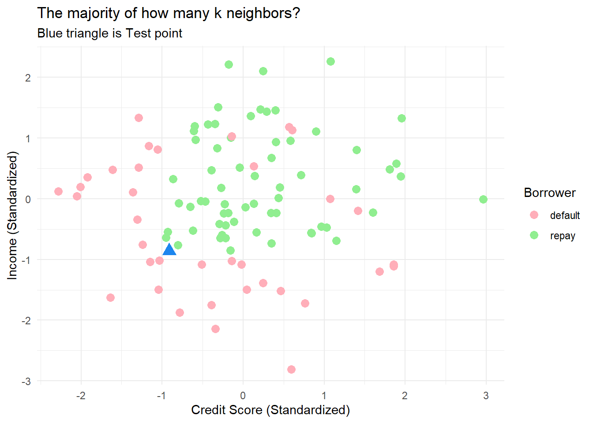
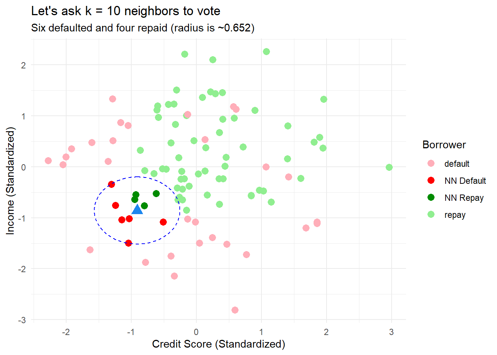
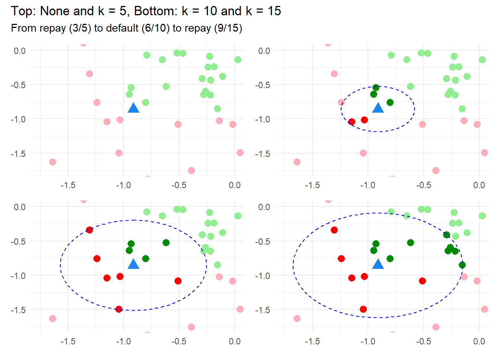
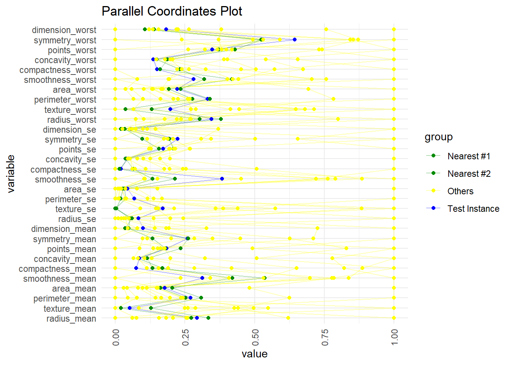

my_libraries <- c("tidyverse", "ggforce", "openxlsx", "patchwork", # for mine
"class", "GGally", "viridis") # for Lantz's data
lapply(my_libraries, library, character.only = TRUE)
library(class)
library(GGally)
library(viridis)Contents
- Visualizing nearest neighbors in two-dimensional feature space (simulated borrow default based on credit score and income)
- Parallel coordinates plot to visualize nearest neighbors in multi-dimensional feature space (Wisconsin breast cancer dataset with 30 features)
First the libraries:
Predicting loan default based on vote of nearest neighbors
Because it’s easy to visualize, my first example is simulated data in a two-dimensional feature space. The training set is 100 borrowers with credit scores and incomes. This is supervised learning: the borrowers either defaulted or repaid. The single test point (see blue triangle below) is a borrower with a credit score of 605 and income of $41,000.
set.seed(743)
n <- 100
credit_scores <- rnorm(n, mean=650, sd=50)
incomes <- rnorm(n, mean=50000, sd=10000)
# Default if credit score is below 600 OR income is below $40,000
labels <- ifelse(credit_scores < 600 | incomes < 40000, "default", "repay")
# But switch some "repay" to "default" to add noise
random_indices <- sample(1:n, n/10) # Arbitrary 10%
labels[random_indices] <- "default"
data <- data.frame(credit_score=credit_scores, income=incomes, label=labels)
# In k-nn, we should either standardize or normalize the data
data$credit_score_std <- (data$credit_score - mean(data$credit_score)) / sd(data$credit_score)
data$income_std <- (data$income - mean(data$income)) / sd(data$income)
# The test point; then standardized
x_point <- 605
y_point <- 41000
x_point_std <- (x_point - mean(data$credit_score)) / sd(data$credit_score)
y_point_std <- (y_point - mean(data$income)) / sd(data$income)
# Euclidean distance (from all points) to test point
distances_std <- sqrt((data$credit_score_std - x_point_std)^2 + (data$income_std - y_point_std)^2)
# The k-nearest neighbors are simply the k (=5 or =10 or =15, eg) smallest distances
k05 <- 5; k10 <- 10; k15 <- 15
k_nearest_indices_std_05 <- order(distances_std)[1:k05]
k_nearest_indices_std_10 <- order(distances_std)[1:k10]
k_nearest_indices_std_15 <- order(distances_std)[1:k15]
# Add distances column and display k-nearest neighbors with their distance
k_nearest_neighbors <- data[k_nearest_indices_std_15, ]
nearest_distances <- distances_std[k_nearest_indices_std_15]
k_nearest_neighbors$distance <- nearest_distances
# write.xlsx(k_nearest_neighbors, "k_nearest_neighbors.xlsx") # Save to XLSX for my manual test
k_nearest_neighbors credit_score income label credit_score_std income_std distance
8 610.8605 41987.97 repay -0.8042146 -0.7593859 0.1453720
82 598.2657 39397.72 default -1.0348797 -1.0164438 0.2012362
41 602.8589 43183.69 repay -0.9507571 -0.6407216 0.2202299
4 591.9976 39166.05 default -1.1496752 -1.0394348 0.2997177
64 603.8825 44168.34 repay -0.9320112 -0.5430040 0.3150938
32 586.9258 41993.56 default -1.2425608 -0.7588305 0.3453891
75 621.0166 44366.85 repay -0.6182127 -0.5233040 0.4446188
53 626.7646 38748.80 default -0.5129427 -1.0808429 0.4569423
1 583.3860 46196.67 default -1.3073894 -0.3417120 0.6501233
45 597.7104 34567.15 default -1.0450498 -1.4958331 0.6522107
11 639.3767 43147.74 repay -0.2819618 -0.6442893 0.6646845
80 640.4270 43630.19 repay -0.2627255 -0.5964111 0.6993563
84 642.8316 43094.04 repay -0.2186871 -0.6496188 0.7233526
52 646.2817 41063.93 repay -0.1555017 -0.8510878 0.7560703
99 638.6851 45497.35 repay -0.2946265 -0.4111129 0.7614394# Now the ggplots!
# colors
three_colors <- c("default" = "lightpink1", "repay" = "lightgreen")
five_colors <- c("default" = "lightpink1", "repay" = "lightgreen", "NN Default" = "red", "NN Repay" = "green4")
# Base plots, with labels and without (and zoomed in per coord_cartesian)
p_base_lab <- ggplot(data, aes(x=credit_score_std, y=income_std)) +
geom_point(aes(x=x_point_std, y=y_point_std), color="dodgerblue2", shape=17, size=4) +
xlab("Credit Score (Standardized)") +
ylab("Income (Standardized)") +
theme_minimal()
p_base <- ggplot(data, aes(x=credit_score_std, y=income_std)) +
geom_point(aes(x=x_point_std, y=y_point_std), color="dodgerblue2", shape=17, size=4) +
theme_minimal() +
theme(legend.position = "none", axis.title = element_blank()) +
coord_cartesian(xlim = c(-1.75, 0), ylim = c(-1.75, 0))
p1_lab <- p_base_lab +
geom_point(aes(color = label), size = 3) +
labs(title = paste("The majority of how many k neighbors?"),
subtitle = paste("Blue triangle is Test point"),
color = "Borrower") +
scale_color_manual(values = three_colors)
p3_lab <- p_base_lab +
geom_point(aes(color = ifelse(row.names(data) %in% row.names(data[k_nearest_indices_std_10, ]),
ifelse(label == "default", "NN Default", "NN Repay"),
label)), size = 3) +
labs(title = paste("Let's ask k = 10 neighbors to vote"),
subtitle = paste("Six defaulted and four repaid (radius is ~0.652)"),
color = "Borrower") +
geom_circle(aes(x0 = x_point_std, y0 = y_point_std, r = 0.658),
color = "blue",linetype="dashed", fill = NA) +
scale_color_manual(values = five_colors)
p1_lab
p3_lab
p1 <- p_base +
geom_point(aes(color = label), size = 3) +
scale_color_manual(values = three_colors)
p2 <- p_base +
geom_point(aes(color = ifelse(row.names(data) %in% row.names(data[k_nearest_indices_std_05, ]),
ifelse(label == "default", "NN Default", "NN Repay"),
label)), size = 3) +
geom_circle(aes(x0 = x_point_std, y0 = y_point_std, r = 0.330),
color = "blue",linetype="dashed", fill = NA) +
scale_color_manual(values = five_colors)
p3 <- p_base +
geom_point(aes(color = ifelse(row.names(data) %in% row.names(data[k_nearest_indices_std_10, ]),
ifelse(label == "default", "NN Default", "NN Repay"),
label)), size = 3) +
geom_circle(aes(x0 = x_point_std, y0 = y_point_std, r = 0.658),
color = "blue",linetype="dashed", fill = NA) +
scale_color_manual(values = five_colors)
p4 <- p_base +
geom_point(aes(color = ifelse(row.names(data) %in% row.names(data[k_nearest_indices_std_15, ]),
ifelse(label == "default", "NN Default", "NN Repay"),
label)), size = 3) +
geom_circle(aes(x0 = x_point_std, y0 = y_point_std, r = 0.763),
color = "blue",linetype="dashed", fill = NA) +
scale_color_manual(values = five_colors)
(p1 | p2) / (p3 | p4) +
plot_annotation(title = "Top: None and k = 5, Bottom: k = 10 and k = 15",
subtitle = "From repay (3/5) to default (6/10) to repay (9/15)")
Predicting default based on vote of nearest neighbors
Most datasets have many features. I quickly tried a few experiments to visualize multidimensional neighbors. At this point, my favorite is the parallel coordinates plot below. I’ll use the dataset from my favorite machine learning introduction: Machine Learning with R by Brent Lantz, 4th Edition. He did not attempt to visualize this nearest neighbor’s example.
We’re using the Wisconsin Breast Cancer Dataset. The dataset has 569 observations and 30 numeric features that describe characteristics of the cell nuclei present in the image. The target variable is the diagnosis (benign or malignant).
Brett Lantz parses the dataset into 469 training observation and 100 test observations. Please note that these features are normalized (i.e., on a zero to one scale) rather than standardized (as I did above). Below, I retrieve the first test instance and plot its two nearest (Euclidean) neighbors in the training set. Although this does not convey numerical distance (obviously), I think it’s a fine way to illustrate the proximity of the features.
load("wbcd_dfs.RData") # wbcd_train, wbcd_train_labels, wbcd_test, wbcd_test_labels
# I previously retrieved the nearest neighbors to the single test instance
# k_nearest neighbors <- function(test_instance, train_data, k)
# save(k_neighbors, file = "k_neighbors.RData")
load("k_neighbors.RData") # k_neighbors
str(wbcd_train)'data.frame': 469 obs. of 30 variables:
$ radius_mean : num 0.253 0.171 0.192 0.203 0.389 ...
$ texture_mean : num 0.0906 0.3125 0.2408 0.1245 0.1184 ...
$ perimeter_mean : num 0.242 0.176 0.187 0.202 0.372 ...
$ area_mean : num 0.136 0.0861 0.0974 0.1024 0.2411 ...
$ smoothness_mean : num 0.453 0.399 0.497 0.576 0.244 ...
$ compactness_mean : num 0.155 0.292 0.18 0.289 0.153 ...
$ concavity_mean : num 0.0934 0.1496 0.0714 0.1086 0.0795 ...
$ points_mean : num 0.184 0.131 0.123 0.238 0.132 ...
$ symmetry_mean : num 0.454 0.435 0.33 0.359 0.334 ...
$ dimension_mean : num 0.202 0.315 0.283 0.227 0.115 ...
$ radius_se : num 0.0451 0.1228 0.0309 0.0822 0.0242 ...
$ texture_se : num 0.0675 0.1849 0.2269 0.2172 0.0116 ...
$ perimeter_se : num 0.043 0.1259 0.0276 0.0515 0.0274 ...
$ area_se : num 0.0199 0.0379 0.0126 0.0365 0.0204 ...
$ smoothness_se : num 0.215 0.196 0.117 0.325 0.112 ...
$ compactness_se : num 0.0717 0.252 0.0533 0.2458 0.0946 ...
$ concavity_se : num 0.0425 0.0847 0.0267 0.0552 0.0392 ...
$ points_se : num 0.235 0.259 0.142 0.372 0.173 ...
$ symmetry_se : num 0.16 0.382 0.131 0.111 0.121 ...
$ dimension_se : num 0.0468 0.0837 0.045 0.088 0.0301 ...
$ radius_worst : num 0.198 0.141 0.159 0.142 0.294 ...
$ texture_worst : num 0.0965 0.291 0.3843 0.0999 0.0989 ...
$ perimeter_worst : num 0.182 0.139 0.147 0.13 0.269 ...
$ area_worst : num 0.0894 0.0589 0.0703 0.0611 0.1558 ...
$ smoothness_worst : num 0.445 0.331 0.434 0.433 0.274 ...
$ compactness_worst: num 0.0964 0.2175 0.1173 0.1503 0.142 ...
$ concavity_worst : num 0.0992 0.153 0.0852 0.0692 0.1088 ...
$ points_worst : num 0.323 0.272 0.255 0.296 0.281 ...
$ symmetry_worst : num 0.249 0.271 0.282 0.106 0.182 ...
$ dimension_worst : num 0.0831 0.1366 0.1559 0.084 0.0828 ...# this knn() function is from the class package
# and it classifies the test set; e.g., 1st is classified as Benign
wbcd_test_pred <- knn(train = wbcd_train, test = wbcd_test,
cl = wbcd_train_labels, k = 21)
wbcd_test_pred[1][1] Benign
Levels: Benign Malignant# inserting first instance at top of training set for graph
wbcd_train <- rbind(wbcd_test[1, ], wbcd_train) # 469 + 1 = 470
wbcd_train$group <- "Others"
wbcd_train$group[1] <- "Test Instance"
obs_2_index <- k_neighbors[1] + 1
wbcd_train$group[obs_2_index] <- "Nearest #1"
obs_3_index <- k_neighbors[2] + 1
wbcd_train$group[obs_3_index] <- "Nearest #2"
# set.seed(479)
set.seed(48514)
# Set the row indices you want to include
row1 <- 1
row2 <- obs_2_index
row3 <- obs_3_index
# Number of random rows to sample
n <- 10
# Sample without the specific rows, then combine with the specific rows
sampled_indices <- sample(setdiff(1:nrow(wbcd_train), c(row1, row2, row3)), n)
final_sample <- rbind(wbcd_train[c(row1, row2, row3), ], wbcd_train[sampled_indices, ])
final_sample |> ggparcoord(columns = 1:30,
groupColumn = "group",
showPoints = TRUE,
alphaLines = 0.3,
scale = "uniminmax") +
scale_color_manual(values = c("Test Instance" = "blue",
"Nearest #1" = "green4",
"Nearest #2" = "green4",
"Others" = "yellow")) +
theme_minimal() +
labs(title = "Parallel Coordinates Plot") +
theme(axis.text.x = element_text(angle = 90, vjust = 0.5, hjust=1)) +
coord_flip()